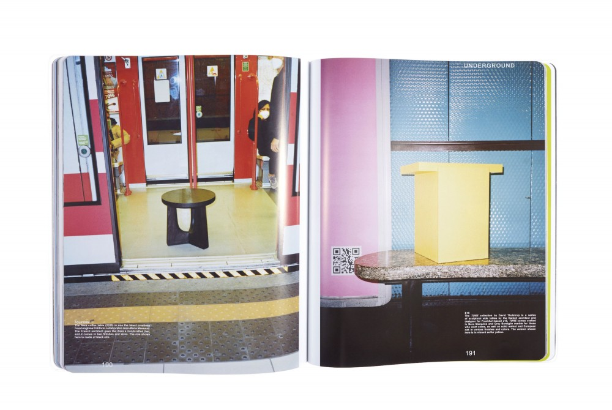

Basic Instincts
MILAN UNDERGROUND: OBJECTS TOUR THE EUROPEAN CAPITAL OF DESIGN’S ICONIC SUBWAY

The Milan metro is iconic. Envisioned by Bob Noorda, Franco Albini, and Franca Helg, it’s the underground system the European capital of design deserves. PIN–UP sent a selection of objects on a tour.
The Nara coffee table 2020 (to the left), is one the latest creations from longtime Poliform collaborator Jean-Marie Massaud. The French architect gave the Nara a handcrafted feel, and it comes in two finishes and sizes. The one shown here is made of black elm. The TORE collection by David Thulstrup (on the right) is a series of sculptural side tables by the Danish architect and designer for Frankfurt-based e15. TORE comes crafted in Nero Marquina and Gray Bardiglio marble for those who want stone, as well as solid walnut and European oak in various finishes and colors. The version shown here is in vibrant sulfur yellow.